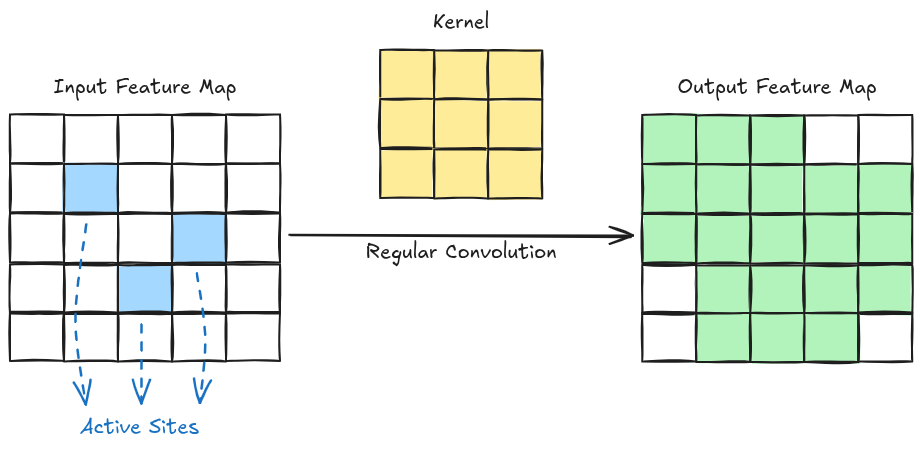
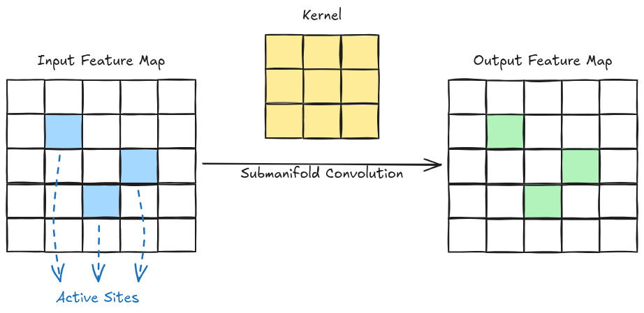

This is the first part of my ? part series on the implementation of submanifold convolution. This part will provide a high-level overview for the implementation of submanifold convolution.
Submanifold Convolution
Submanifold convolution operates on a sparse input with
We can perform convolution by making a site in the output active if any of the inputs to its receptive field is active. However, this has the problem of dilating the set of active sites, i.e. it doesn’t preserve sparsity, as shown below:

This problem can be solved by making a site in the output active by only considering the central active input to the receptive field. This type of convolution is called Submanifold Convolution. The output set of active sites in such a convolution exactly mirrors that of the input set as shown below:

Implementation
To implement submanifold convolution efficiently, we need a way to fetch the neighbors of the active sites. For this purpose, we do the following two things:
- Create a hash map with the active sites as keys and the corresponding feature vector as the values.
- Use the hash map to create a neighbor map. For each active sites, the neighbor map contains the location of its active neighbors.
Contents